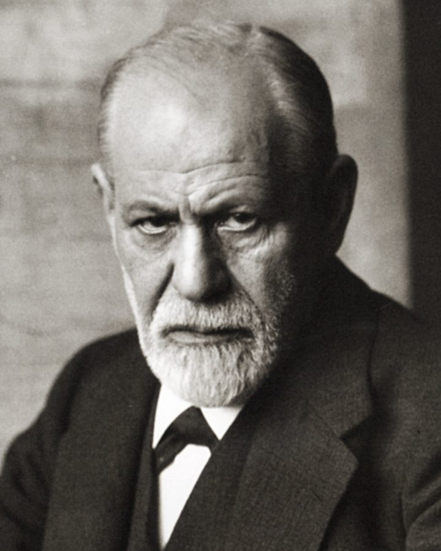
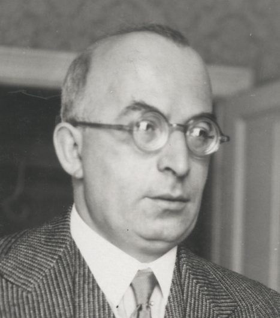
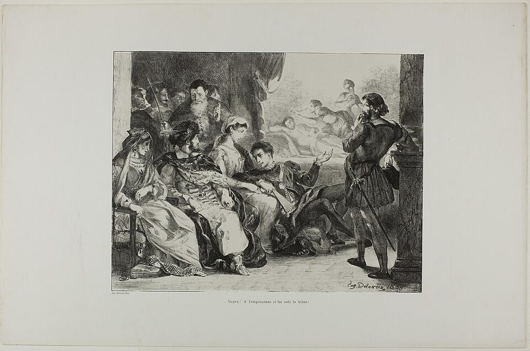

amenable to
… could never be amenable to psychoanalysis
能被……处理
书面说法，be amenable to treatment = 能治疗。括号里的意思：这种自毁属于那个人一生的无意识逻辑，精神分析也治不了它。
弗洛伊德篇的中段。上一页讲死亡驱力：生命想「按自己的方式死」。这一页 Phillips 把这个想法接到传记上，读了四份文本：一本几乎不谈私事的《自传研究》，1936 年拒绝茨威格为他写传的信，1930 年歌德奖演说里对传记的反复掂量，1910 年《达·芬奇》结尾对偶然的致敬。读的时候抓两条线：弗洛伊德为什么不信一个人的一生能被写清楚；Phillips 怎样把死亡驱力读成拆掉人生故事的那股力量。

上一页先读 1885 年烧掉笔记的信，再读《超越快乐原则》，最后在第 20 段留下两个问题：死亡驱力是用来解决什么问题的；弗洛伊德为什么那么反传记。这一页就是 Phillips 的回答，两个问题在这里并成一个。第 24 段说的「我前面讲过的虚构」，指上一页第 12 段弗洛伊德讲生命怎样起源；第 21 段括号里说「我们也会看到」他的态度怎样影响了后来的传记作者，指的是下一页的 Jones 和 Gay。
一个人的一生，能不能被别人写成一个真实的故事？
读的时候带着这几个问题。不用先找答案，读完回来对照「检查一下理解」。
§3 接着上一页的死亡驱力往下推：从一本「没有私事的自传」，推到每个人身上同时进行着两种人生故事。§4 换成一封信：茨威格要写传，弗洛伊德回信拒绝，末尾拉进哈姆雷特的一句台词。Phillips 把台词所在的那场戏整段摆出来，又拐到一条注释，读到这里会觉得绕远了，其实他要落到「人人都该挨鞭子」上。§5 最长，跟着歌德奖演说一来一回，Phillips 边引边挑毛病；接着转到《达·芬奇》的结尾讲偶然，最后用拉康的一句话停在「孩子和大人有什么不同」上，这一下也会显得突然。§6 只有两段，把前面收成一个悖论，再顺手提到当下关于弗洛伊德的论战。
作者落在哪：Phillips 认为，弗洛伊德反传记，是因为传记假定一个人的一生能被看清、写定，而死亡驱力和偶然都在拆这种连贯。他说这是一个悖论：精神分析越发展，弗洛伊德越不信人能被认识；他对传记真相的怀疑，也暗中是对真相本身的怀疑。
这一页是原书弗洛伊德篇的第 3–6 节。原书没有小标题，只在节与节之间空一行；粗体的节名是本站起的，斜体是这一节第一段开头的几个词，在电子书里搜它就能跳过去。读完打个勾。
先把这一页用到、作者默认你懂的几个概念讲一遍。讲的是概念本身，作者拿它做什么，读原书时自己看。死亡驱力在序章那一页讲过：死亡驱力。
弗洛伊德 1920 年在《超越快乐原则》里重新给本能分了两大类。一类把生命保存下来，并把它结合成越来越大的整体，他借希腊神话里爱神的名字叫它 Eros（爱欲），性本能和自我保存的本能都算在里面；另一类想把这些整体拆散，让生命回到无机的状态，就是死亡驱力。1930 年的《文明及其不满》说，生命的种种现象就出自这两者的合作和对抗，而且两者很少单独出现，总是按不同比例混在一起。打个比方：Eros 是不停地合并、连接，死亡驱力是不停地拆回零件。死亡驱力常被叫作 Thanatos（希腊神话里的死神），但弗洛伊德的著作里没写过这个词，一般认为是他的学生 Stekel 造的、Federn 推广开的。今天的心理学不把这对二元论当作科学理论。
在这一页：第 24–25 段引《文明及其不满》的两句，Phillips 借这对本能讲「人身上同时进行着两种人生故事」。第 25 段他自己用了 Thanatos 这个叫法。
瑞士精神病学家 Eugen Bleuler 1910 年提出的词，指对同一个人或同一件事同时怀着相反的感情。弗洛伊德在《图腾与禁忌》（1912–13）里采用了它，说的主要是爱和恨同时指向同一个人，例如孩子爱父亲，也恨这个挡在自己和母亲之间的对手（见俄狄浦斯情结）。日常的例子：对一位敬佩的老师，有时也巴不得看他出一次丑。它和「拿不定主意」不同：不是两种想法还没分出胜负，而是两种感情都是真的，同时都在。这个词今天早已进了日常语言和一般的心理学，不再只是精神分析的术语。
在这一页：第 37–38 段。歌德奖演说里，弗洛伊德最后用「我们对父亲和老师的态度本来就是矛盾的」为传记辩护（原文见下面「原典」）。
用心理学（最早是精神分析）解释一个历史人物的性格和作品，比如从童年经历推出他为什么成了那样的人。弗洛伊德 1910 年的《列奥纳多·达·芬奇的一个童年记忆》常被看作最早的心理传记之一；1958 年 Erik Erikson 的《青年路德》让它成了一个门类。批评一直很多：材料少，只能推测；所用的理论缺乏实证；容易把一个人简化成一份病历。艺术史家 Meyer Schapiro 1956 年指出，弗洛伊德那本书里关键的「秃鹫」，达·芬奇的意大利文原文其实是鸢（nibbio），是德译本译错了；历史学家 David Stannard 1980 年的 Shrinking History 批评得更全面。今天仍有人做心理传记，研究者更强调把推测和证据分开。
在这一页：第 40–42 段。Phillips 读的正是弗洛伊德这部心理传记的结尾，拿它讲偶然和童年怎样让传记无从下手。
按在书里出现的顺序排，标题前是节号。作品只讲到读懂这一页需要的程度。
德文原名叫 Selbstdarstellung（自述），1925 年收在一套名家自述的文集里。英译本 1927 年在美国出版，书名 An Autobiographical Study；1935 年美国出新版，弗洛伊德补写了一篇后记，第 22 段引的就是后记里的话：这本书的两个主题，他的一生和精神分析的历史，紧紧缠在一起。耐人寻味的是，德文后记紧接着这几句就讲了一件私事：写这本书前不久，他一度以为恶性肿瘤复发、生命将尽，是 1923 年的手术救了他。这一句 Phillips 没引。

1936 年，弗洛伊德八十岁生日前后，茨威格来信，说人的生活因弗洛伊德的成就得到了矫正，又说自己一直在琢磨给他写传。弗洛伊德 5 月底回信拒绝，理由一层叠一层：您有更重要的事要做；我太喜欢您，不能让您干这个；当传记作者就得说谎、粉饰；真相得不到，人也不配。第 26 段 Phillips 把茨威格的来信叫作「夸大的评价」。书里引的是英译，回信的德文只有一部分留在研究文献里，见下面「原典」。

莎士比亚的悲剧，约 1600 年。这一场里，一个巡回剧团来到宫廷，哈姆雷特嘱咐大臣波洛涅斯（Polonius）好好安顿他们：伶人是这个时代的缩影。波洛涅斯说会按他们应得的对待，哈姆雷特回他：要是每个人都按应得的对待，谁逃得过鞭子？弗洛伊德给茨威格的信，用的就是这一句。第 33 段 Phillips 又引了 Harold Jenkins 编的 Arden 版《哈姆雷特》（1982）的注：鞭打是对无执照伶人的法定刑罚，他们被当作流浪汉。
歌德奖是法兰克福市设的奖，1930 年颁给弗洛伊德。他身体太弱，没有去，8 月 28 日由女儿 Anna Freud 在歌德故居代读了演说稿（他写给评奖委员会秘书的信、1935 年的后记都提到这件事）。演说的本意是替精神分析辩护：有人指责分析家拿歌德作分析对象，是对伟人不敬。弗洛伊德说传记同样在「拉近」伟人，这才谈到传记。第 35 段 Phillips 把传记说成生者对死者的哀悼。
达·芬奇在笔记里记过一段童年记忆：他躺在摇篮里，一只鸟飞来，用尾巴撬开他的嘴。弗洛伊德把它当作后来的幻想来分析，从达·芬奇是私生子、母亲对他过分温柔推论出：童年之后他的性欲受到压抑，转成了旺盛的求知欲。书的最后一段讲偶然，第 41 段引的就是它，原文见下面「原典」。
第 43 段引了法国精神分析家拉康（Jacques Lacan，1901–1981）的一段话，拉康在那里借了帕斯卡的一句「孩子不是大人」。Phillips 拿它追问：大人是什么样，孩子又是什么样。同一段点了四个名字，Melanie Klein、Anna Freud、Donald Winnicott、John Bowlby，都在英国工作，是弗洛伊德之后研究儿童内心和母子关系的代表人物，彼此的看法分歧很大。这里只需知道：孩子是什么样，在精神分析内部也没有定论。
1990 年代围绕弗洛伊德的一场论战。1993 年文学批评家 Frederick Crews 在《纽约书评》发表《不为人知的弗洛伊德》，指他篡改病例材料、操纵同事，引来一轮又一轮反驳；美国国会图书馆的弗洛伊德展览也因争议推迟，1998 年才开幕。第 45 段说，人们想用两种办法给精神分析下定论：拿科学标准检验它，或者去挖弗洛伊德的生平。
Phillips 引的弗洛伊德是有版权的英译。下面放弗洛伊德的德文原文（他 1939 年去世，原文早已是公有领域），配本站从德文译的全译；省略处用 …。
回信的德文没有可靠的公开全文，这里是一篇研究论文转引的片段。Phillips 引文中间「您能拥立君王……」那几句的德文没找到；末句里转引者补了一个逗号，本站用 … 跨过。
… Drohung, daß Sie mein Biograph werden wollen. Sie, der so viel Schöneres und Wichtigeres zu tun hat … Wer Biograph wird, verpflichtet sich zur Lüge, zur Verheimlichung, Heuchelei, Schönfärberei und selbst zur Verhehlung seines Unverständnisses, denn die biographische Wahrheit ist nicht zu haben, und wenn man sie hätte, wäre sie nicht zu brauchen. Die Wahrheit ist nicht gangbar, die Menschen verdienen sie nicht, und übrigens … hat unser Prinz Hamlet nicht recht, wenn er fragt, ob jemand dem Auspeitschen entgehen könnte, wenn er nach Verdienst behandelt würde?
本站译：……您要做我的传记作者，这个威胁。您，有那么多更美好、更重要的事要做……谁当了传记作者，谁就得投身于谎言、隐瞒、伪善、粉饰，甚至还得掩饰自己的不理解，因为传记的真相是得不到的，就算得到了，也派不上用场。真相行不通，人们也不配得到它；再说，我们的哈姆雷特王子问得不对吗：要是每个人都按他应得的对待，谁能逃得过鞭子？
德文和书里的英译有两处错开：「传记的真相得不到」（nicht zu haben），英译作「不存在」；「真相行不通」（nicht gangbar，字面是路走不通、钱币不通用），英译作「得不到」。第 28 段 Phillips 说「一生没法写对」，依据的是英译。
Phillips 引了这一段的大部分，在「比如莎士比亚」之后用省略号跳过了一长句。下面把那一句补上。为了篇幅，本站另用 … 略去了两处 Phillips 引了的话：开头半句（传记作者想从现存记载里重建他的一生），和后面「怎样为这种需要辩护」那两句。
Wir alle, die wir Goethe verehren, lassen uns doch ohne viel Sträuben die Bemühungen der Biographen gefallen … Was aber sollen uns diese Biographien leisten? Auch die beste und vollständigste könnte die beiden Fragen nicht beantworten, die allein wissenswert scheinen. Sie würde das Rätsel der wunderbaren Begabung nicht aufklären, die den Künstler macht, und sie könnte uns nicht helfen, den Wert und die Wirkung seiner Werke besser zu erfassen. Und doch ist es unzweifelhaft, daß eine solche Biographie ein starkes Bedürfnis bei uns befriedigt. Wir verspüren dies so deutlich, wenn die Ungunst der historischen Überlieferung diesem Bedürfnis die Befriedigung versagt hat, z. B. im Falle Shakespeares. Es ist uns allen unleugbar peinlich, daß wir noch immer nicht wissen, wer die Komödien, Trauerspiele und Sonette Shakespeares verfaßt hat, ob wirklich der ungelehrte Sohn des Stratforder Kleinbürgers, der in London eine bescheidene Stellung als Schauspieler erreicht, oder doch eher der hochgeborene und feingebildete, leidenschaftlich unordentliche, einigermaßen deklassierte Aristokrat Edward de Vere, siebzehnter Earl of Oxford, erblicher Lord Great Chamberlain von England. … es ist also das Bedürfnis, affektive Beziehungen zu solchen Menschen zu gewinnen, sie den Vätern, Lehrern, Vorbildern anzureihen, die wir gekannt oder deren Einfluß wir bereits erfahren haben, unter der Erwartung, daß ihre Persönlichkeiten ebenso großartig und bewundernswert sein werden wie die Werke, die wir von ihnen besitzen.
本站译：我们这些崇敬歌德的人，对传记作者的种种努力，也都没怎么反对就接受了……可是这些传记能给我们什么呢？哪怕是最好、最完整的一部，也回答不了那仅有的两个看来值得知道的问题。它解不开那造就艺术家的奇妙天赋之谜，也帮不了我们更好地把握他作品的价值和影响。然而毫无疑问，这样一部传记满足了我们心里一种强烈的需要。当历史流传下来的东西不帮忙、让这种需要得不到满足的时候，我们感觉得格外清楚，比如莎士比亚。我们大家都不能不难堪地承认，至今仍不知道莎士比亚的喜剧、悲剧和十四行诗是谁写的：真是那个斯特拉福小市民的没念过多少书的儿子、在伦敦当上一个不起眼的演员的人吗，还是那位出身高贵、教养优雅、热情而放纵、多少有些落魄的贵族，第十七代牛津伯爵、世袭的英格兰掌礼大臣 Edward de Vere？……所以，这是一种需要：和这样的人建立感情上的联系，把他们排进我们认识的、或者已经受过其影响的父亲、老师和榜样的行列，并期待他们的人格也像我们拥有的他们的作品一样伟大、令人钦佩。
Phillips 省掉的这一句，是弗洛伊德在公开演说里表示倾向于「莎士比亚其实是牛津伯爵」这一说法（oder doch eher，「还是更可能」）。今天的莎学界主流不接受这个说法。
Phillips 在第 37 段分几处引了这一段，到「心理上的宿命」为止。演说后面还有几句，讲精神分析用在歌德身上为什么还没什么进展，他没引，本站摘在 … 之后。
Immerhin wollen wir zugestehen, daß noch ein anderes Motiv im Spiele ist. Die Rechtfertigung des Biographen enthält auch ein Bekenntnis. Nicht herabsetzen zwar will der Biograph den Heros, sondern ihn uns näherbringen. Aber das heißt doch die Distanz, die uns von ihm trennt, verringern, wirkt doch in der Richtung einer Erniedrigung. Und es ist unvermeidlich, wenn wir vom Leben eines Großen mehr erfahren, werden wir auch von Gelegenheiten hören, in denen er es wirklich nicht besser gemacht hat als wir, uns menschlich wirklich nahegekommen ist. Dennoch meine ich, wir erklären die Bemühungen der Biographik für legitim. Unsere Einstellung zu Vätern und Lehrern ist nun einmal eine ambivalente, denn unsere Verehrung für sie deckt regelmäßig eine Komponente von feindseliger Auflehnung. Das ist ein psychologisches Verhängnis, läßt sich ohne gewaltsame Unterdrückung der Wahrheit nicht ändern und muß sich auf unser Verhältnis zu den großen Männern, deren Lebensgeschichte wir erforschen wollen, fortsetzen. … Aber ich gestehe, im Falle von Goethe haben wir es noch nicht weit gebracht. Das rührt daher, daß Goethe nicht nur als Dichter ein großer Bekenner war, sondern auch trotz der Fülle autobiographischer Aufzeichnungen ein sorgsamer Verhüller.
本站译：不过我们也该承认，这里还有另一个动机在起作用。传记作者为自己辩护的话里，也含着一份供认。传记作者固然不想贬低英雄，只想把他拉近到我们身边。可这就意味着缩短他和我们之间的距离，结果还是朝着降低他的方向起作用。而且不可避免：我们对一位伟人的一生知道得越多，也就会听说一些场合，在那里他确实没有比我们做得更好，在人性上确实和我们接近。尽管如此，我认为我们还是可以宣布传记的努力是正当的。我们对父亲和老师的态度本来就是矛盾的，因为我们对他们的崇敬里，照例掩着一份带敌意的反叛。这是一种心理上的宿命，不强行压住真相就改变不了，它也必然延续到我们和那些伟人的关系上，我们正想研究他们的生平。……不过我得承认，在歌德这里，我们还没走出多远。原因在于，歌德不只作为诗人是个伟大的坦白者，尽管他留下了大量自传性的记录，他也是个细心的掩藏者。
原文里的矛盾情感，说的是我们对父亲、老师和伟人的态度；「传记作者和艺术家都同样矛盾」是 Phillips 往前推的一步。第 37 段他议论英译 degraded 兼有退化、分解的意思，德文 Erniedrigung 只是「降低、贬低」。
Phillips 从这一段的半句话引起，中间用省略号跳过一句，停在「童年最初那几年」。下面从同一处起，引到全书结束。
wenn man den Zufall für unwürdig hält, über unser Schicksal zu entscheiden, ist es bloß ein Rückfall in die fromme Weltanschauung, deren Überwindung Leonardo selbst vorbereitete, als er niederschrieb, die Sonne bewege sich nicht. Wir sind natürlich gekränkt darüber, daß ein gerechter Gott und eine gütige Vorsehung uns nicht besser vor solchen Einwirkungen in unserer wehrlosesten Lebenszeit behüten. Wir vergessen dabei gern, daß eigentlich alles an unserem Leben Zufall ist, von unserer Entstehung an durch das Zusammentreffen von Spermatozoon und Ei, Zufall, der darum doch an der Gesetzmäßigkeit und Notwendigkeit der Natur seinen Anteil hat, bloß der Beziehung zu unseren Wünschen und Illusionen entbehrt. Die Aufteilung unserer Lebensdeterminierung zwischen den »Notwendigkeiten« unserer Konstitution und den »Zufälligkeiten« unserer Kindheit mag im einzelnen noch ungesichert sein; im ganzen läßt sich aber ein Zweifel an der Bedeutsamkeit gerade unserer ersten Kinderjahre nicht mehr festhalten. Wir zeigen alle noch zu wenig Respekt vor der Natur, die nach Leonardos dunklen, an Hamlets Rede gemahnenden Worten »voll ist zahlloser Ursachen, die niemals in die Erfahrung traten« (La natura è piena d'infinite ragioni che non furono mai in isperienza). Jeder von uns Menschenwesen entspricht einem der ungezählten Experimente, in denen diese ragioni der Natur sich in die Erfahrung drängen.
本站译：要是认为偶然不配决定我们的命运，那只是退回到虔诚的世界观里去；而达·芬奇写下「太阳不动」的时候，正是在为克服这种世界观铺路。我们自然会觉得委屈：公正的上帝和慈爱的天意，为什么不在我们一生最无力自卫的时候，更好地护着我们，免受这类影响。我们却很容易忘记，其实我们生命里的一切都是偶然，从精子和卵子相遇、我们由此而生的那一刻起就是如此；不过这种偶然照样有份于自然的规律和必然，只是和我们的愿望、幻想毫无关系。我们一生的决定因素，在体质的「必然」和童年的「偶然」之间怎样分配，细节上也许还说不准；但总的来说，恰恰是童年最初那几年的重要性，已经不容怀疑。我们大家对自然仍然太不尊重。用达·芬奇那句晦涩、让人想起哈姆雷特台词的话说，自然「充满了从未进入经验的无数原因」（括号里是达·芬奇的意大利文原话）。我们每一个人，都对应着无数次实验中的一次，自然的这些原因就在这些实验里挤进了经验。
Phillips 跳过的那一句说：偶然照样属于自然的规律和必然，只是和我们的愿望无关。他没引的最后两句又提到哈姆雷特，并说每个人都是自然的一次实验，和序章第 27 段「人生更像实验」一句遥相呼应。
你用 Kindle，单个生词长按就能查，这里只收词典帮不上的：Phillips 的悖论和警句，每个词都认识、合起来拐了弯的说法，英式口语和学术腔，典故和双关。斜体小字是原句里连续的几个词，错字照电子书原样，搜它就能跳到那里。
读不通的扫描错字：
Biography, in seeming to account for a life, denies the essentially unformulatable logic of a life. A life is a riddle without a Sphinx.— §3 第 21 段。本站译：传记看似解释了一个人的一生，否认的却恰恰是一生那根本说不出来的逻辑。一生是一个没有斯芬克斯的谜。
两句话的分量落在两个词上：seeming（看似）和 without（没有）。传记的毛病不是写错，是「看似」解释得通。后一句接着上一页：年轻的弗洛伊德想当斯芬克斯，做一个让传记作者解不开的谜。到这里 Phillips 把出谜的人也拿掉了：一生是个谜，却没有谁握着谜底，传记作者想当俄狄浦斯也无从解起。
people were not truth-seeking animals in any simple sense; that the concept of truth was a cover story— §6 第 45 段。本站译：人并不是简单意义上追求真理的动物；「真理」这个概念，是一个打掩护的说法。
先看这句话前面的主语：What psychoanalysis kept showing Freud, despite his wish to the contrary，是精神分析一再「让弗洛伊德看到」的，而且违背他的意愿。所以这是 Phillips 替弗洛伊德总结的教训，不是弗洛伊德的宣言。cover story 后面还有半句：掩护的是形形色色的满足。可以这样读：追问真相，有时是为了控制别人、为了安心、为了赢。
读完这一页的几节再看。下面是作者在这几节里的论点，由本站按论点重新组织，不按原书的顺序；每条上方是依据所在的段落，拿不准就回书里那几段再读一遍。
弗洛伊德似乎在说，人不是在破坏自己的人生，只是在按自己的方式死；说谁「自毁」，就假定了知道什么对他好。Phillips 由此说：传记看似解释一生，否认的正是一生说不清的逻辑。连弗洛伊德的《自传研究》也几乎没有私事；我们怎样逃开自己的一生，就是我们的一生。
§3 第 21、23 段Phillips 用「仿佛」把 Eros 和死亡驱力读成两种人生故事：一种要把生命连成更大的整体、讲下去，一种要按自己的方式打断它。这就是自传和反自传，然后「也许」才有传记。他还认为弗洛伊德前后不一，重心变了：1920 年强调按自己的方式死，到 1930 年更强调回到无机状态。
§3 第 24–25 段拒绝茨威格的信说传记作者注定说谎，真相得不到，人也不配。Phillips 觉得这里有点抗议过头，又借哈姆雷特那句台词读出：人人都该受罚。他说弗洛伊德暗示一生有两个真实的故事，按自己的方式死，和自己的罪疚，传记作者几乎都够不着；传记作者的动机也不可信。
§4 第 28、33–34 段歌德奖演说里，传记答不了真正想知道的事，却满足了把伟人排进父亲、老师行列的需要；它贬低伟人，却仍然正当，因为人人都矛盾。Phillips 说这是一段令人困惑的思路，并问：为什么弗洛伊德假定我们受不了榜样是复杂的人？在传记问题上，他「动机总是混杂」的信念失灵了。
§5 第 37–38 段弗洛伊德给的唯一线索是无意识的本能，而本能只能透过伪装被认识，又受偶然和童年摆布；《达·芬奇》的结尾就在向偶然致敬。活人躺在分析室里尚且难以重建，传记作者更不用说。Phillips 称之为悖论：理论越发展，弗洛伊德越不信人能被认识。
§5 第 39–42 段，§6 第 44–45 段合起来：上一页的死亡驱力是「按自己的方式死」，这一页 Phillips 把它推成「不被别人写定」。序章说，从两人赞美和痛骂的东西里能看出他们的道德；弗洛伊德痛骂的正是传记，因为它假装把一个人看透了。下一页看两位传记作者怎样写他的死。
读完作者的论点，再看它站不站得住。每一块摆出三样：主流怎么看，作者怎么看，本站的评论。最后一句是本站对这一页的总体判断。
主流看法：《达·芬奇》常被看作心理传记的开端，也常被当作反面教材。艺术史家 Meyer Schapiro 1956 年指出，书里关键的「秃鹫」在达·芬奇的原文里是鸢，是德译本译错了，弗洛伊德据此做的一段推论随之落空；历史学家 Stannard 等人批评心理传记的理论根基太弱。
作者的看法：Phillips 只说弗洛伊德在这部书的结尾最有力地向偶然致敬（第 40 段），并用它说明传记无从下手（第 42 段）；第 44 段把这些收成「越研究越看不透」的悖论。
本站的评论：弗洛伊德并不一贯反传记。歌德奖演说的本意是为精神分析的传记辩护，说它能揭示别的办法揭示不了的联系；《达·芬奇》里他说分析得不出可靠结论，要怪材料太少，不怪方法。同一本书里他也承认，有一部分精神分析解释不了。Phillips 挑出他最怀疑的那些话，拼成一个越来越怀疑的弗洛伊德。这个形象有原文撑着，但只是一半。
主流看法：死亡驱力是弗洛伊德最受争议的假设，多数心理学家不接受它，精神分析内部也有很多人拒绝，克莱因学派、拉康派等保留了它。弗洛伊德在《文明及其不满》里也承认，死亡驱力在生命体内部「无声地」工作，很难指出来，这「当然不算证明」。
作者的看法：Phillips 不论它真不真，把它当作「有用的虚构」来读：Eros 要讲更多的故事，死亡驱力要打断故事，人身上同时有自传和反自传（第 24–25 段）。
本站的评论：作为比喻，这个读法说中了日常经验：人确实常不自觉地拆掉自己的计划，也讨厌被人「看透」。但这是 Phillips 的改写，弗洛伊德说的是回到无机状态，后来又落到攻击性上。第 25 段说的「重心变了」也是他的读法：「回到无机状态」1920 年就有（见上一页「原典」），1930 年那几句前面原文就写着「下一步我是在《超越快乐原则》（1920）里迈出的」，是弗洛伊德在复述旧说。当文学读法可以，当心理学结论没有证据。
本站的总体看法：这一页最可信的，是 Phillips 对弗洛伊德文本里自相矛盾之处的指认：信里层层加码，演说一来一回，原文都摆得出来。「一生是没有斯芬克斯的谜」也说中了一些东西。要打折扣的是两处：死亡驱力被读成「反自传」，是 Phillips 的改写；「越研究越看不透」只拣了弗洛伊德怀疑的一面。
先在心里答，再点开。答错的那题，回书里把对应那一节再读一遍。
假定了知道什么对这个人好、知道他一生「真正」的逻辑，好像有一种全知的眼光。弗洛伊德似乎在说，人不是在破坏自己的一生，只是在按自己的方式死。
它几乎不谈私事，其实是精神分析运动的自传。弗洛伊德在 1935 年的后记里自己也说，他的一生和精神分析的历史缠在一起，私人经历不值一提。
每个人都比看上去更糟，都该受罚；所以真相就算拿得到，也只会让人幻灭。他还提到注释：台词本来说的是伶人，鞭打是对无执照伶人的刑罚。
凭矛盾情感：我们对父亲、老师和伟人本来就又敬又带敌意，这是心理上的宿命。Phillips 觉得这是一段令人困惑的思路，而且在传记问题上弗洛伊德「动机总是混杂」的信念失灵了。
偶然：本能冲进一个不受控制的世界，被偶然和童年塑造。这些连活生生躺在分析室里的病人都难以重建，传记作者手里只有文件，更无从下手。
精神分析理论越发展，弗洛伊德越不相信人能被认识；精神分析不能预测人生，只能事后讲出一些意思。Phillips 说，他对传记真相的怀疑，也暗中是对真相本身的怀疑。
用一句话说这一页，写给一个没读过的人。
想一想：如果有人要为你写一本传记，你最希望他写进什么，最不希望他知道什么？你自己向别人讲自己的故事时，又常常略过哪一段？
读过又忘了，从这里想起来。挑的是这一页最值得记住的场面、原文和说法，不按原书顺序；每条后面是节号，想细看就回书里那一节。全书各页的这一节都收在全书回顾。
一句话：弗洛伊德不信一个人的一生能被写清楚：死亡驱力、偶然、矛盾情感都在拆传记想要的连贯；Phillips 说，他对传记真相的怀疑，也是对真相本身的怀疑。
传记看似解释了一生，否认的却是一生说不清的逻辑。一生是个谜，没有谁握着谜底。
§3弗洛伊德的《自传研究》几乎只讲精神分析。Phillips 说：我们怎样逃开自己的一生，就是我们的一生。
§3茨威格想写传，弗洛伊德回信：传记作者注定说谎，真相得不到，人也不配；末尾借哈姆雷特说，人人照应得的对待，都该挨鞭子。
§4歌德奖演说由 Anna Freud 代读：传记没用，又满足需要；贬低伟人，又仍然正当，因为人人都矛盾。
§5《达·芬奇》的结尾：从精子和卵子相遇起，生命里的一切都是偶然；嫌偶然不配决定命运，就是退回虔诚的世界观。
§5理论越发展，弗洛伊德越不信人能被认识。Phillips 说「真理」这个概念，常是给各种满足打掩护。
§6